This Issue
August 2026 edition
39 vs 103
Homes bought by flippers this edition versus the same two months a year ago (recorded deeds)
Flippers stopped restocking: 39 acquisitions against 103 a year ago, and the pipeline is now draining
Flipper acquisitions fell to 39 this edition from 103 a year ago, while 42 flips sold against 73 — net additions to flip inventory ran −3, versus +30 a year ago. The operator count thinned to 31 from 53, and the top ten operators took 54% of flip revenue against 39%. Median hold on what did sell stretched to 298.5 days from 224, with 43% held over a year. Counts, dates and hold times are recorded; every dollar figure in this edition is an estimate, since this county does not disclose prices.
Investor Playbook
What this issue's numbers suggest checking, by investor type. Observations from recorded data — not investment, legal, or tax advice.
The buyer list is 31 names, not 53
Wholesalers
Flipper purchases ran 19.5 per month this edition against 51.5 a year ago and a four-year average of 45.1, and only 31 operators closed an exit. Rebuilding the list around the operators still active is worth more than volume marketing. Where flip share rose — Delano 67203 (9.5% vs 4.1%), El Dorado 67042 and West Wichita 67209 (each 7.1% vs 1.4%) — there is still a bid; 67052 went to zero from 6.8%. The product that sold: 3 bed, about 1,573 sqft, median year built 1952, a third pre-1950.
Underwrite ten months of carry, not five
Flippers
Median hold on flips sold this edition was 298.5 days against 224 a year ago, with 43% over a year and only 12% under 90 days. The p70-p90 operator band — 76 operators, mean 4.3 lifetime flips — turns in a median 187 days on larger, newer stock (about 1,689 sqft, median year built 1971) versus the market's 1952. The data suggests the newer, larger product is where the turn is; margins are gross of rehab and carry, and all dollar figures here are estimates.
Less competition for 1950s stock
Landlords
With flipper buying at 39 against 103, the pre-1960 inventory investors bought — 51 purchases from the 1950s, 22 from the 1940s, 22 pre-1940 — faces fewer rehab bidders. The zips carrying flips at the lowest estimated buy basis are worth checking: 67213 at roughly $117,900 median buy with 4 flips, 67216 at roughly $126,200 with 4, 67211 at roughly $138,300 with 3. Estimated $/sqft on 2-4 units, roughly $105, sits below single family at roughly $120.
The gap is 9-to-12-month bridge, not 6
Private lenders
Ten private loans were recorded this edition against 32 a year ago, on a trailing-twelve-month base where 41% of the 81 financed purchases funded rehab. Median recorded loan was about $120,000. Falcon Financing led on count with 7 loans to 4 borrowers at a median loan-to-price near 0.80; Seek First Capital ran 4 at a similar ratio. With median holds now at 298.5 days, term structure matched to a ten-month hold is what the recorded book is not currently supplying. Rates and terms are not recorded and are not published here.
Six apartment trades, 29 small-multi trades
Multifamily investors
Purchases split 29 deals in 2-4 units at an estimated median near $282,000 and 6 in apartment 5+ at an estimated median near $685,000, roughly $137/sqft against roughly $105/sqft for 2-4 units. Only 3 of 42 flip exits were 2-4 unit product, so small multifamily is being acquired to hold. Seller-financed notes held ran 44 this edition, flat against 44 a year ago — the structure is still available on this product where bank paper is scarce.
Factoids
Numbers from this period a practitioner would repeat to a colleague. Each computed directly from recorded instruments.
192 investor purchases — Recorded investor purchases across the five-county metro this edition
trending down · vs 200 a year ago and 277 in the prior period
The year-over-year change is small; the drop from the prior two months is the notable one, at −31%. Recorded counts lag four to eight weeks and the most recent month can still grow.
10 private loans recorded — Recorded private-lending instruments on residential property this edition
trending down · vs 32 a year ago
Over the trailing twelve months only 81 of 320 observed investor purchases carried recorded financing, a 25.3% financed share. Purchase capital in this market is overwhelmingly unrecorded or cash.
Delano 67203 at 9.5% of flips — Share of period flip sales in zip 67203 against its share a year ago
trending up · vs 4.1% a year ago
El Dorado 67042 and West Wichita 67209 each moved to 7.1% from 1.4%, while Goddard West 67052 went to zero from 6.8%. On 42 total flips these are small absolute counts, so read them as direction, not magnitude.
Butler County 14.3% of flips — Butler County share of metro flip sales versus a year ago
trending up · vs 8.2% a year ago
Sedgwick fell to 85.7% from 91.8%. Median distance of a flip from the Wichita CBD was 9.19 km, against 8.72 km a year ago — exits drifted slightly outward.
29 purchases of 2-4 unit property — Recorded investor purchases of 2-4 unit residential product this edition, of 192 total
holding steady · vs 141 single-family purchases in the same period
Estimated basis on 2-4 units works out to roughly $105/sqft against roughly $120/sqft for single family. Small multifamily was only 4.8% of flip exits, so the product is being held rather than turned.
1,032 homes in flipper inventory — Estimated held flip inventory in the latest month against the same month a year ago
trending down · vs 1,123 a year ago
The latest month recorded 22 bought, 44 resold and 9 aged out of the flip window. Inventory has fallen in each of the last four months in the series.
Market Activity — Investor Purchases
Monthly count of investor purchases of MSA properties (left axis) and the median purchase price (right axis), trailing 13 months. The most recent month can grow up to ~15% as late recordings arrive.
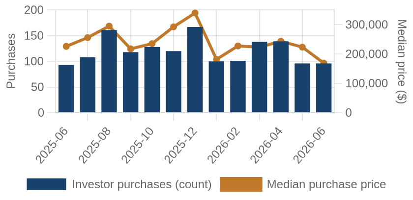
Investor purchases per month (bars) and median purchase price (line), trailing 13 months.
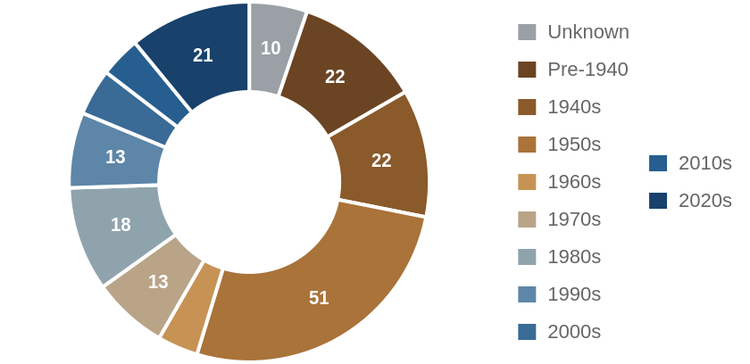
Which vintage of housing investors bought this edition, by decade built.
Where the Money Went
The geography of the period's investor activity: which zip codes saw the most recorded deals, and the largest individual transactions at street level.
The 8 busiest zip codes for investor deals
Pins rank the busiest zips by recorded investor deals (purchases + flips of existing homes) this period — #1 busiest; orange = top 3; pin size scales with deal volume. Median buy is the typical investor purchase; median sale the typical flip resale. Click a pin for details; full table below.
| # | Zip | Area | Purchases | Flips | Median buy | Median sale |
|---|
| #1 | 67042 | El Dorado | 17 | 3 | $183,600 | n/a |
| #2 | 67002 | Andover | 15 | 1 | $329,042 | n/a |
| #3 | 67216 | South Wichita | 12 | 4 | $126,184 | n/a |
| #4 | 67213 | South Central | 8 | 4 | $117,948 | n/a |
| #5 | 67207 | Southeast Wichita | 10 | 1 | $207,860 | n/a |
| #6 | 67211 | Planeview | 8 | 3 | $138,276 | n/a |
| #7 | 67218 | Southeast Heights | 11 | 0 | $162,193 | n/a |
| #8 | 67037 | Derby | 7 | 2 | $222,908 | n/a |
Dollar figures on this page are estimates. This county does not disclose sale prices, so 59% of them are back-computed from the recorded mortgage at an assumed loan-to-value. Treat every price, margin and per-foot figure as indicative. Counts, dates, hold times, parties and geography come from the deed record itself and are unaffected.
A representative deal in each of the busiest zips
One deal per zip: the largest matching this market's typical house (typical for this market: 1689 sqft, 3 bed, built around 1971; priced within 4x the county assessment and under 5x its own zip's median).
$470,820 · Purchase
244 S MCCANDLESS RD, Andover KS 67002
Single family · 1,780 sqft · Jun 3
Street View Jul 2023 — before the purchase
$404,320 · Purchase
4595 NW HOPKINS SWITCH RD, El Dorado KS 67042
Single family · 1,642 sqft · Jun 26
Street View Sep 2023 — before the purchase
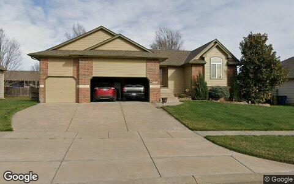
$340,480 · Purchase
1326 S SUMMIT RD, Derby KS 67037
Single family · 2,676 sqft · Jun 10
Street View Mar 2026 — before the purchase
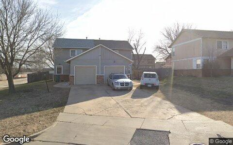
$283,024 · Purchase
1202 S DOREEN ST, Wichita KS 67207
2-4 units · 1,362 sqft · May 13
Street View Feb 2026 — before the purchase
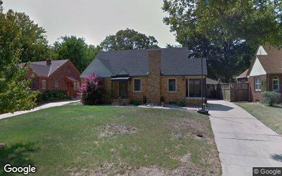
$279,300 · Purchase
437 ELPYCO ST, Wichita KS 67218
Single family · 1,936 sqft · May 29
Street View Aug 2011 — before the purchase
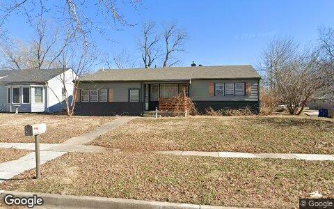
$212,002 · Purchase
1858 S VOLUTSIA AVE, Wichita KS 67211
Single family · 2,166 sqft · Jun 16
Street View Feb 2026 — before the purchase
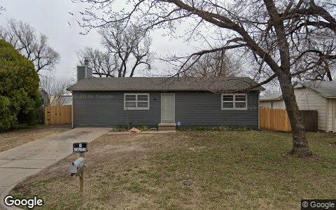
$208,477 · Flip
1618 S RICHMOND AVE, Wichita KS 67213
Single family · 1,128 sqft · May 8
Street View Mar 2026 — before the purchase
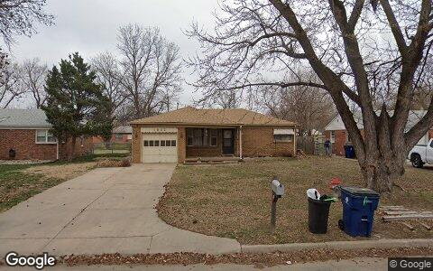
$154,612 · Purchase
2902 S WASHINGTON AVE, Wichita KS 67216
Single family · 1,261 sqft · Jun 4
Street View Mar 2026 — before the purchase
Deal sheet — private lending, in date order
Private loans recorded against residential property this period, oldest first.
| Date | Lender | Amount | Property | Use |
|---|
| May 4 | Community National BK&TR | $115,000 | 1000 Helen ST, Augusta KS 67010 | 2-4 units |
| May 4 | Community National BK&TR | $115,000 | 1000 Helen ST, Augusta KS 67010 | 2-4 units |
| May 4 | Community National BK&TR | $115,000 | 1000 Helen ST, Augusta KS 67010 | 2-4 units |
| May 4 | Community National BK&TR | $115,000 | 1002 Helen ST, Augusta KS 67010 | 2-4 units |
| May 4 | Community National BK&TR | $115,000 | 1002 Helen ST, Augusta KS 67010 | 2-4 units |
| May 4 | Community National BK&TR | $115,000 | 1002 Helen ST, Augusta KS 67010 | 2-4 units |
| May 6 | Harrison Warner | $59,445 | 522 Akron ST, Augusta KS 67010 | Single family |
| Jun 1 | Halstead Jonathan | $150,000 | 620 S Queen ST, Maize KS 67101 | Single family |
Largest flip margin deals of the period, at street level
Gross margin = recorded sale price minus the flipper's recorded purchase price. Purchase deeds are recoverable for roughly 4 in 10 flips; rehab and carry costs are not public record.
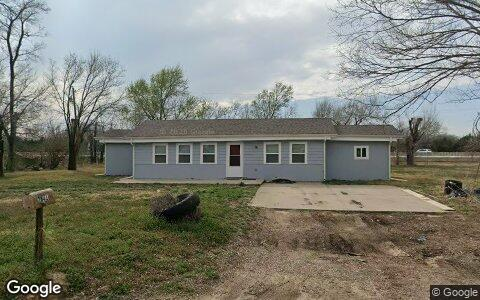
$122,696 gross · bought $77,140 (Mar 2025) → sold $199,836
7841 S WASHINGTON ST, Haysville KS 67060
Single family · 1,292 sqft · May 14
Street View Mar 2026 — during the flip
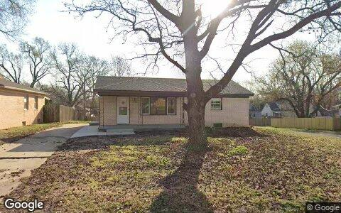
$115,420 gross · bought $60,000 (Dec 2025) → sold $175,420
444 S DERBY AVE, Derby KS 67037
Single family · 1,025 sqft · Jun 4
Street View Mar 2026 — during the flip
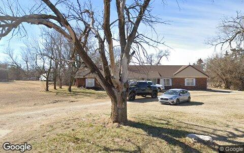
$109,459 gross · bought $265,800 (Dec 2025) → sold $375,259
2241 N BELMONT ST, Wichita KS 67220
Single family · 2,029 sqft · May 1
Street View Feb 2026 — during the flip
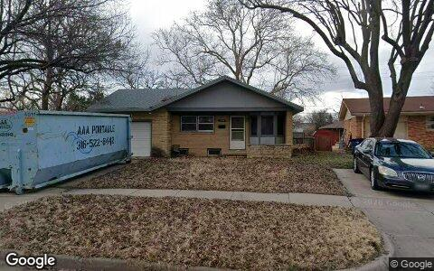
$95,092 gross · bought $133,000 (Feb 2026) → sold $228,092
2230 W MANHATTAN DR, Wichita KS 67204
Single family · 1,666 sqft · Jun 12
Street View Feb 2026 — during the flip
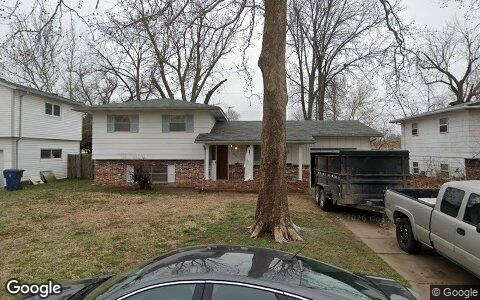
$85,811 gross · bought $167,048 (Mar 2026) → sold $252,859
1931 E 50TH ST S, Wichita KS 67216
Single family · 1,408 sqft · May 1
Street View Mar 2026 — during the flip
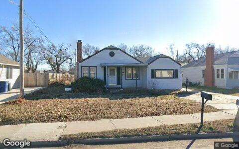
$82,845 gross · bought $138,320 (Jun 2025) → sold $221,165
2438 S HYDRAULIC ST, Wichita KS 67216
Single family · 1,339 sqft · May 21
Street View Feb 2026 — during the flip
Flip Structure — Year over Year
How the flip market itself is changing: margins, who is doing the flipping, what they flip, and where. Same two calendar months, this year vs last, from the current data extract.
| Flip market structure | Same months last year | This edition |
|---|
| Flips sold | 73 | 42 |
| Median sale | $211,041 | $197,320 |
| Median $/sqft | $150 | $146 |
| Sale vs county-assessed | 1.55× | 1.60× |
| Median gross margin (matched buys) | $44,472 | $33,236 |
| Median margin % | 23% | 18% |
| Median hold | 7.4 mo | 9.8 mo |
| Homes bought by flippers | 103 | 39 |
| Net to inventory (bought − sold) | +30 | −3 |
| Active flippers | 53 | 31 |
| Top-10 flippers' revenue share | 39% | 54% |
| Median house: sqft / beds / built | 1452 / 3 / 1953 | 1573 / 3 / 1953 |
| Pre-1950 stock share | 36% | 33% |
| 2–4 unit share | 4% | 5% |
| Median distance from downtown | 8.7 km | 9.2 km |
Dollar figures on this page are estimates. This county does not disclose sale prices, so 59% of them are back-computed from the recorded mortgage at an assumed loan-to-value. Treat every price, margin and per-foot figure as indicative. Counts, dates, hold times, parties and geography come from the deed record itself and are unaffected.
Homes bought counts every deed recorded to a known flipper in the window, resold or not. Net to inventory is that minus flips sold. The standing stock is in the Flip Pipeline section.
Attributed profit per flip (per-investor aggregates, by drop period): Feb 26→Jun 26: 183 flips, $1,956/flip · Jun 26→Aug 26: 54 flips, $82,309/flip.
County mix (share of flips, last year → this edition): Sedgwick 92%→86% · Butler 8%→14%.
Biggest zip share moves: Goddard West 6.8%→0.0% · Planeview 13.7%→7.1% · North Wichita 8.2%→2.4% · El Dorado 1.4%→7.1% · West Wichita 1.4%→7.1% · Delano 4.1%→9.5%.
Flip Pipeline — Buying, Selling and Inventory
Homes bought by known flippers and homes they resold, per month, alongside the stock sitting in flipper hands. A house enters inventory when a flipper buys it and leaves on the next recorded sale, at any price. Purchases still unsold after five years are treated as holds and drop out.
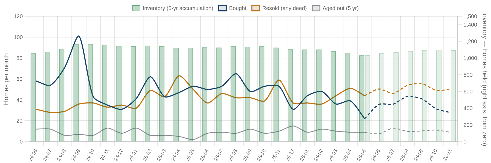
Solid = recorded, dashed = projected. Green bars are inventory on the right axis: homes bought and not yet resold. Aged out is purchases passing five years unsold. Inventory moves by bought minus resold minus aged out.
| Flip pipeline | Bought / mo | Resold / mo | Aged out / mo | Inventory |
|---|
| Latest recorded month (2026-05) | 22 | 44 | 9 | 1,032 |
| Projected (2026-11) | 28 | 50 | 9 | 1,094 |
Method: a straight-line trend through the last 24 months, adjusted for the month of the year, shown dashed as a projection. The series stops before the newest month or two, where deeds are still recording.
Who's Funding the Deals
First mortgages open on flipper purchases from Jul 2025 – Jun 2026 that have not yet resold. 25% carried recorded debt; the rest closed cash or off-record. Ranked by deal count.
25%
Purchases financed
81 of 320 flipper purchases carried a recorded first mortgage
$120,000
Typical loan
recorded lien amount; this county does not disclose sale prices, so loan-to-price cannot be computed here
| Lender | Loans | Borrowers | Median loan | Median purchase |
|---|
| Falcon Financing LLC | 7 | 4 | $107,500 | $118,800 |
| Conway Bank | 5 | 1 | $475,358 | $465,566 |
| Ict Antioch LLC | 4 | 3 | $115,000 | $133,215 |
| Seek First Capital LLC | 4 | 3 | $112,500 | $140,650 |
Dollar figures on this page are estimates. This county does not disclose sale prices, so 59% of them are back-computed from the recorded mortgage at an assumed loan-to-value. Treat every price, margin and per-foot figure as indicative. Counts, dates, hold times, parties and geography come from the deed record itself and are unaffected.
Rates and terms are not published: the county feed models both. Borrowers counts the distinct flippers on each lender's book. Loan vs price is the recorded first mortgage divided by what the buyer paid. Above 1.00x the lender is funding purchase plus rehab; below it the buyer brought cash to the table. Blanket mortgages covering several parcels are excluded, as are loans outside 0.1x-3x the price. Rates and points are not public record.
Flipper Profile — The Working Flipper
The 70th–90th percentile of local flippers by lifetime flip count — the established operators below the whales: 3–9 lifetime flips each. Bath counts are not in the assessor extract.
76
Flippers in the band
each with 3–9 lifetime flips (avg 4.3)
$36,800
Median gross margin
283 flips matched to their purchase price
6.2 mo
Typical hold
purchase to resale, matched deals
1689 sqft · 3 bd
Typical house
median year built 1971
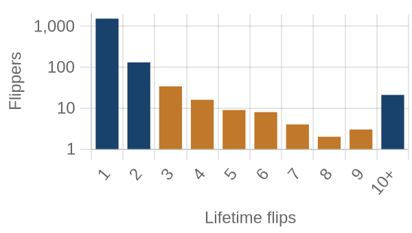
flippers by lifetime flips · orange = this band
Where they work: Haysville North (67217) 11% · Northwest Wichita (67205) 6% · Planeview (67211) 6% · Andover (67002) 5% · Derby (67037) 5%.
Market Pulse
| per month, Feb–Jun 2026 | per month, Jun–Aug 2026 | change | avg/mo 2yr | avg/mo 4yr |
|---|
| ▼ Homes bought by flippers | 52 | 20 | -62% | 49 | 45 |
| ▼ Flips sold (deeds) | 37 | 21 | -42% | 41 | 35 |
| ▲ Lending deals funded | 19 | 21 | +14% | — | — |
| ▼ Seller/notes held (net) | 12 | 9 | -28% | — | — |
| ▲ Investors (net) | -39 | 17 | +56/mo | — | — |
Flips and flipper purchases = recorded deeds, same two months each year; their 2- and 4-year columns are per-month averages of the deed series. The remaining rows come from the investor file, which spans 13 months, so they have no multi-year average (2026: Jun 2026 → Aug 2026; 2025: Feb 2026 → Jun 2026).
Past Issues
Methodology
Source Data
County recorder & assessor via FARES
Every figure is computed from recorded instruments (deeds, mortgages, assignments) and assessor property records for the five counties of the Wichita-Elyria MSA. No surveys, no estimates, no listings data.
This edition analyzes transactions dated May 1 – June 30, 2026, as recorded through the 2026-08 data extract.
Who Counts as an Investor
Transaction-pattern identification
Investors are entities whose recorded transaction history looks like investing: rental holding (landlords), short-hold resales (flippers), private mortgage lending, note holding, or contract assignment (wholesalers). Banks, homebuilders, iBuyers, SFR funds, and government entities are identified by name and reported separately from small investors.
How Comparisons Work
Attribution deltas + same-window comparisons
The Market Pulse reports activity attributed between successive data drops, from the per-investor lifetime totals maintained upstream — periods differ in length, so per-month rates are shown. Elsewhere, "vs. year ago" compares the same calendar months one year earlier, counted from the same data extract. Transfers under $5,000 (quitclaims, partial interests) are excluded everywhere. Counts lag recording by 4–8 weeks, and the newest month can grow up to ~15% as late records arrive — direction is reliable before magnitude.
Known Limits
Floors, not ceilings
Wholesale assignments only appear when they touch a recorded deed, so those counts are a floor. Flip hold times are measured from the prior recorded sale. Names are the owner of record, which may be an LLC or trust.
About
Purpose
A working tool for small real estate investors in Greater Wichita: what actually closed, where, at what prices, and what it suggests checking next — one theme per issue.
Cadence
Published with each bi-monthly data drop, covering the two most recent complete months of recorded activity.
Disclaimer
Observations from public records, not investment, legal, or tax advice. Past activity does not guarantee future results. Verify any property or counterparty independently before transacting.